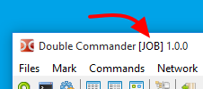

When launching Double Commander executable we may specify some command line parameters to customize our start up.
For example, we may specify the directories that will be displayed in the file panels.
There are some switches that may be used as well.
These switches are NOT case sensitive.
Here is a summary description of the syntax of what's possible in the command line:
doublecmd.exe [-C] [-T] [-P L|R] [path1\subpath1] [path2\subpath2]
An alternative form is also possible like this one:
doublecmd.exe [-C] [-T] [-P L|R] [-L path1\subpath1] [-R path2\subpath2]
Here is the list of what may be present as parameters when launching Double Commander.
| Command Line Parameters | |
|---|---|
| Parameter | Description |
path1\sub1 [path2\sub2] (no switches, directly a path) | Loads the first directory passed into the left panel. If a second one is provided, it will also be opened but in the right panel. Directory names containing spaces must be put in double quotes. Always specify the full path name. |
-C or --client | If Double Commander is already running, activate it and pass the path(s) in the command line to that instance. |
-L directory | Set directory to show in the left panel. |
-R directory | Set directory to show in the right panel. |
-P L|R | Sets the active panel when program starts:
|
-T | Opens the passed directory(ies) in new tab(s) |
--no-console | Run Double Commander without console debug window. |
--config-dir=path | Set custom directory path with DC configurations files. |
--servername=x |
Sets the name of the instance (server) DC, which can then be used to pass parameters. If there is no already existing instance, then create it. If there is already existing instance, and the current one is a client, then send params to the server (i.e. to the existing instance). If there is already existing instance, and the current one is not a client, (i.e. Allow only one copy of DC at a time is false and no If there is already some trailing number, then increase it by 1, until we found a servername that isn't busy yet, and then create instance with this servername. |
--no-splash | Disables the splash screen at startup DC. |
Here is a few examples of wanted behaviors that could be done via command line parameters when launching Double Commander.
Open the directory e:\Xilinx\ISE DS in the left panel and the directory c:\temp in the right one:
doublecmd.exe "e:\Xilinx\ISE DS" c:\temp
Open directory c:\Logs in a new tab in the active panel of and already running instance of Double Commander:
doublecmd.exe -c -t c:\Logs
Start application with configuration files from directory f:\Documents\DC\Job Settings with the mention JOB in the title bar of application:
doublecmd.exe --config-dir="f:\Documents\DC\Job Settings" --servername="JOB"
